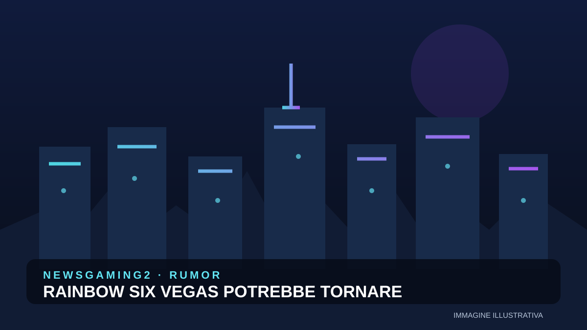
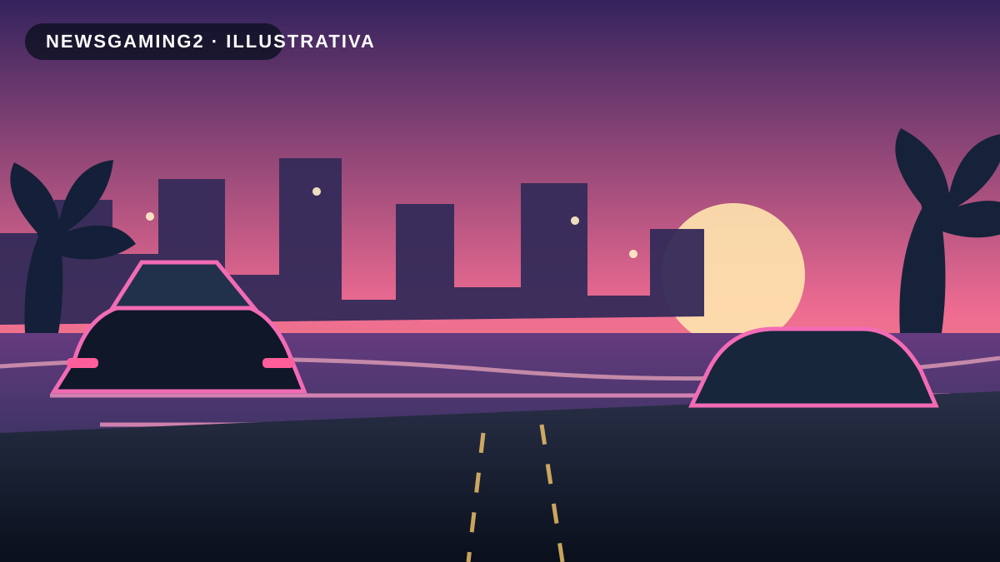
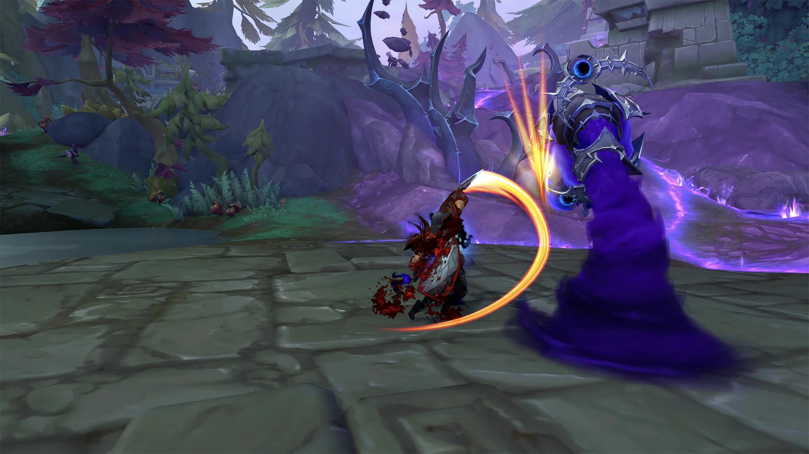
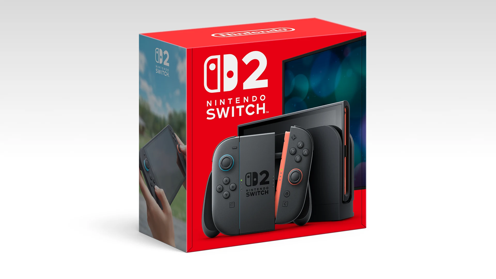
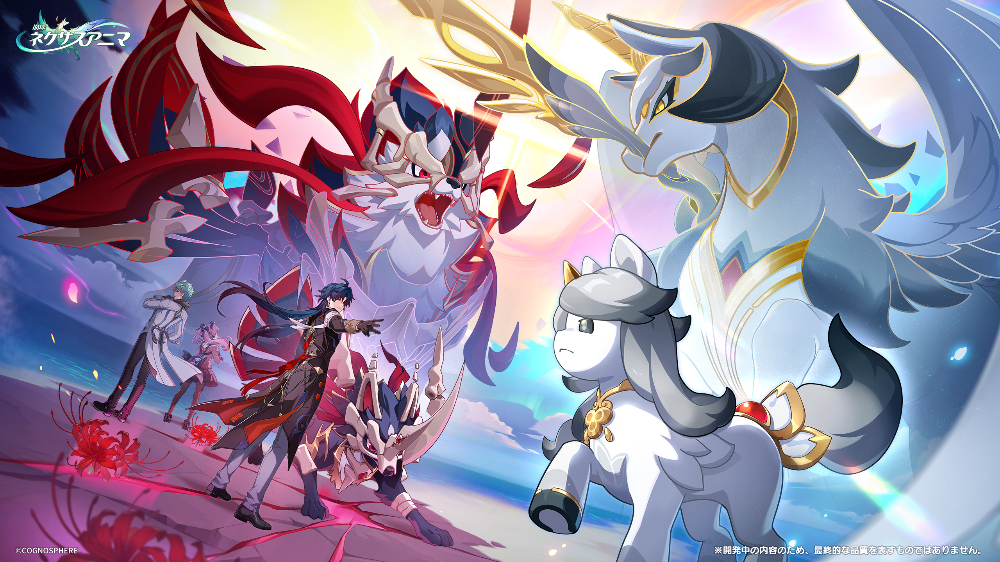
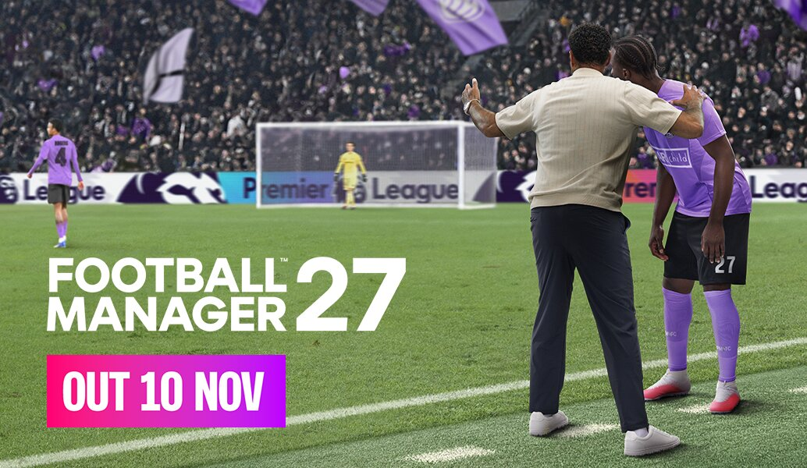

Gaming · tecnologia · cultura digitale
NEWSGAMING2 — Guide, analisi e notizie sui videogiochi
Guide ragionate, analisi e approfondimenti per capire meglio giochi, console e tecnologia. Testi leggibili, informazioni contestualizzate e nessuna promessa inventata.
50+ GuideAnalisi e approfondimentiOgni giornoAggiornamenti gamingCommunityRecensioni e confronto
NEWS FEED
Scopri altri articoli →GTA 6 · aggiornamenti e novità✦Nintendo Switch 2 · notizie e analisi✦PC Gaming · hardware e tecnologia✦Esports · tornei e risultati✦GTA 6 · aggiornamenti e novità✦Nintendo Switch 2 · notizie e analisi✦PC Gaming · hardware e tecnologia✦Esports · tornei e risultati✦
Da non perdere
Articoli in evidenza
Scorri lateralmente per trovare il prossimo approfondimento.
 ★ News e approfondimenti · GTA 6GTA 6 e la sfida Pacifista: cosa è davvero possibile e cosa non è confermatoScelte meno letali sì, ma nessuna No-Kill Run o trofeo Pacifista confermato.Leggi l’articolo →
★ News e approfondimenti · GTA 6GTA 6 e la sfida Pacifista: cosa è davvero possibile e cosa non è confermatoScelte meno letali sì, ma nessuna No-Kill Run o trofeo Pacifista confermato.Leggi l’articolo → ★ News e approfondimenti · GTA 6GTA 6 su PS5 e Xbox Series X: prestazioni, bug e pareri della communityTest su PS5 e Xbox, differenze tra console e cosa è davvero confermato sui problemi tecnici.Leggi l’articolo →
★ News e approfondimenti · GTA 6GTA 6 su PS5 e Xbox Series X: prestazioni, bug e pareri della communityTest su PS5 e Xbox, differenze tra console e cosa è davvero confermato sui problemi tecnici.Leggi l’articolo → ★ Xbox · Game PassXbox Game Pass: le novità della seconda metà di novembre 2026Una selezione di avventure, enigmi e proposte cooperative in arrivo tra novembre e inizio dicembre.Leggi l’articolo →
★ Xbox · Game PassXbox Game Pass: le novità della seconda metà di novembre 2026Una selezione di avventure, enigmi e proposte cooperative in arrivo tra novembre e inizio dicembre.Leggi l’articolo →
 ★ News e approfondimenti · IndustriaIntelligenza artificiale nei videogiochi: il caso Big Walk riaccende il dibattitoIl caso Big Walk riporta al centro il confronto sull’uso dell’IA nello sviluppo e sul ruolo della creatività umana.Leggi l’articolo →
★ News e approfondimenti · IndustriaIntelligenza artificiale nei videogiochi: il caso Big Walk riaccende il dibattitoIl caso Big Walk riporta al centro il confronto sull’uso dell’IA nello sviluppo e sul ruolo della creatività umana.Leggi l’articolo →

★ News e approfondimenti · RumorRainbow Six Vegas potrebbe tornare: il rumor che fa parlare i fanUn'indiscrezione su un possibile progetto in fase iniziale: cosa si sa e cosa non è confermato.Leggi l’articolo →
★ News e approfondimenti · GTA 6 · RumorGTA 6: spunta un presunto video leak con gameplayUn filmato su X sembra mostrare una persona mentre gioca, ma non è stato verificato.Leggi l’articolo → ★ News e approfondimenti · GTA 6GTA 6: una mappa dettagliata circola online, cosa mostra il video?Un filmato mostra coste, città, strade e punti d'interesse. Ecco cosa si vede e perché la mappa non è confermata da Rockstar Games.Leggi l’articolo →
★ PlayStation · SpecialeGTA 6: tutto quello che sappiamo su storia, personaggi, mappa e gameplayUn approfondimento completo su Jason, Lucia, Vice City, Leonida, musica, tecnologia e piattaforme: cosa è confermato e cosa resta da scoprire.Leggi l’articolo →
★ News e approfondimenti · GTA 6GTA 6: una mappa dettagliata circola online, cosa mostra il video?Un filmato mostra coste, città, strade e punti d'interesse. Ecco cosa si vede e perché la mappa non è confermata da Rockstar Games.Leggi l’articolo →
★ PlayStation · SpecialeGTA 6: tutto quello che sappiamo su storia, personaggi, mappa e gameplayUn approfondimento completo su Jason, Lucia, Vice City, Leonida, musica, tecnologia e piattaforme: cosa è confermato e cosa resta da scoprire.Leggi l’articolo → ★ PlayStationPlayStation Plus a novembre: arriva Death Stranding 2 e cambia il servizio su PCIl catalogo si aggiorna dal 17 novembre; l'app PlayStation Plus per PC sarà ritirata dal 10 dicembre.Leggi l’articolo →
★ EsportsWorlds 2026: BLG supera T1 e raggiunge Gen.G in finaleLa semifinale si chiude 3-1: ecco cosa racconta il risultato e cosa aspettarsi dall’ultimo atto del mondiale di League of Legends.Leggi l’articolo →
★ PlayStationPlayStation Plus a novembre: arriva Death Stranding 2 e cambia il servizio su PCIl catalogo si aggiorna dal 17 novembre; l'app PlayStation Plus per PC sarà ritirata dal 10 dicembre.Leggi l’articolo →
★ EsportsWorlds 2026: BLG supera T1 e raggiunge Gen.G in finaleLa semifinale si chiude 3-1: ecco cosa racconta il risultato e cosa aspettarsi dall’ultimo atto del mondiale di League of Legends.Leggi l’articolo →
★ PCWorld of Warcraft: Forever aumenta del 50% l’esperienza nei dungeonIl hotfix dell’8 novembre interviene sull’esperienza ottenuta dai nemici nei dungeon dopo le critiche dei giocatori: cosa cambia nel livellamento.Leggi l’articolo → ★ NintendoOcarina of Time su Switch 2: lancio fisico da record nel Regno UnitoSecondo i dati riportati l’8 novembre, il remake ha ottenuto il secondo miglior debutto fisico della serie Zelda nel mercato britannico.Leggi l’articolo →
★ NintendoOcarina of Time su Switch 2: lancio fisico da record nel Regno UnitoSecondo i dati riportati l’8 novembre, il remake ha ottenuto il secondo miglior debutto fisico della serie Zelda nel mercato britannico.Leggi l’articolo →
★ NintendoNintendo Switch 2: vendite trimestrali in calo, ma la console supera i predecessoriI dati trimestrali riportati il 9 novembre mostrano un rallentamento anno su anno: perché il confronto con il lancio va interpretato nel contesto.Leggi l’articolo →★ PCPath of Exile 2 lascia l’accesso anticipato l’11 dicembre: cosa aspettarsiGrinding Gear Games prepara il passaggio fuori dall’early access con nuove classi, atti e una nuova lega: ecco come leggere l’annuncio.Leggi l’articolo →
★ MobileHonkai: Nexus Anima punta alla primavera 2027 e apre le iscrizioni alla betaHoYoverse ha indicato una finestra di lancio per la primavera 2027 e ha aperto le registrazioni per l’ultima closed beta.Leggi l’articolo →★ XboxXbox testa un’app PC più veloce: cosa cambia per avvio, web e cloud gamingL’aggiornamento per gli Insider promette un avvio dell’app fino al 60% più rapido e un’esperienza rivista tra PC, web e cloud.Leggi l’articolo →
★ News e approfondimentiLe uscite gaming della settimana: Football Manager 27, Warhammer Survivors e Shrek 2Una guida alle uscite annunciate tra il 9 e il 16 novembre 2026, con piattaforme e date da controllare prima dell’acquisto.Leggi l’articolo →Il nostro metodo
Preferiamo spiegazioni chiare e verificabili alle indiscrezioni presentate come certezze. Le guide sono pensate per aiutare a capire i giochi e la tecnologia, non per sostituire le informazioni ufficiali dei produttori.